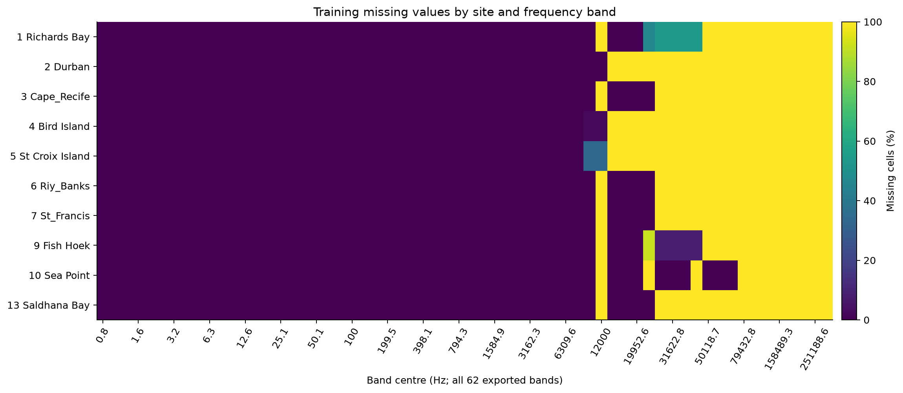
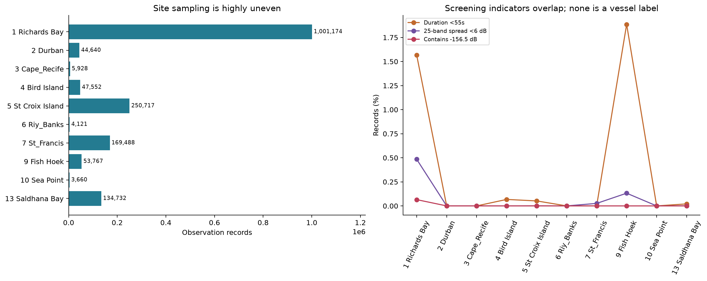
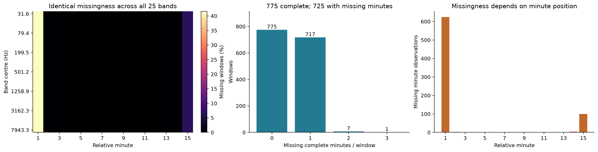
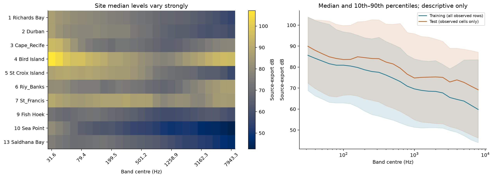
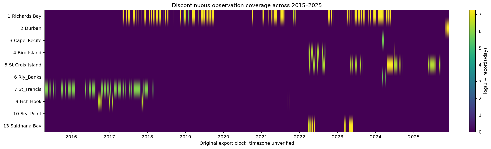
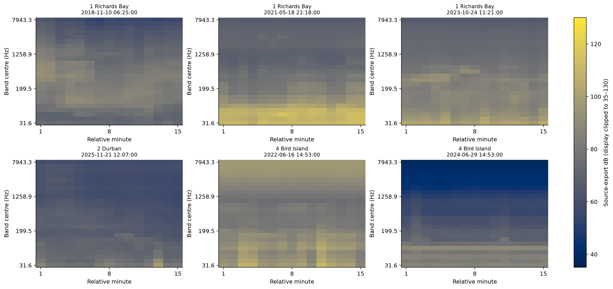
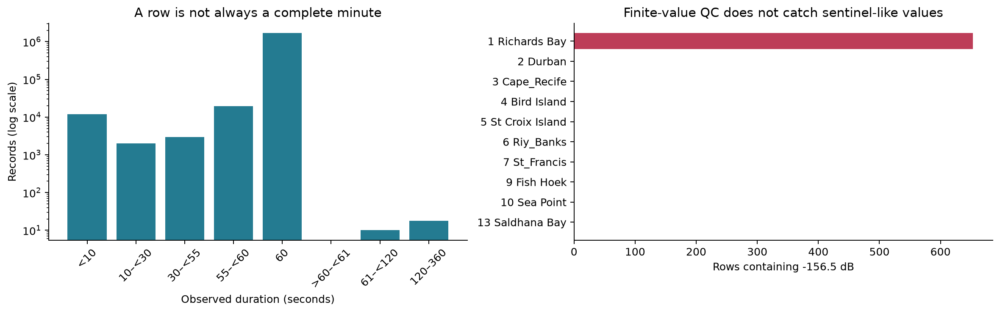
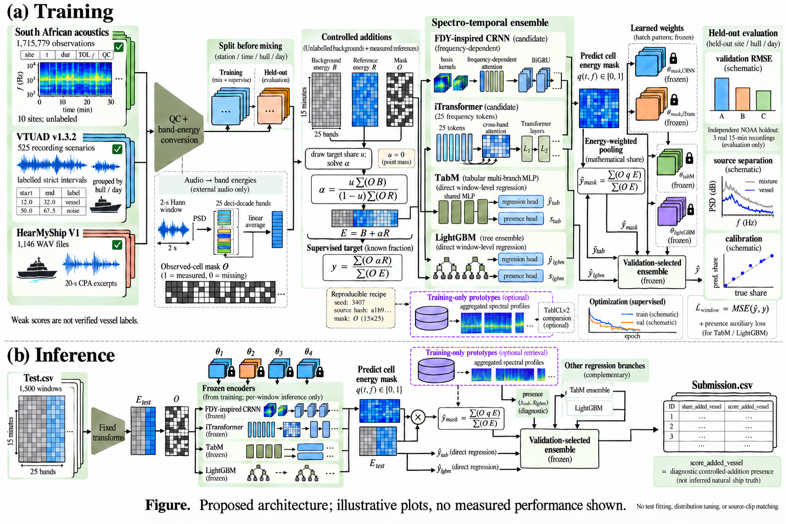

실제 데이터 감사, 출처가 검증된 외부 음원, 제어 에너지 합성, 모델 비교와 추론까지.
CPU 실험과 데이터 구축 완료. GPU 다중 시드 최적화와 대회 공식 성능 확인은 아직 진행하지 않았습니다.
대회 입력은 원본 파형이 아닌 15분 × 25개 대역의 dB 요약값입니다. 원본 남아공 관측값에는 확인된 정답이 없습니다. 제공되지 않은 AIS를 있다고 가정하거나 자연 선박 존재를 정답으로 만드는 방식은 사용하지 않습니다.
O는 관측 마스크입니다. 결측은 무음이 아닙니다. B에 원래 선박 소리가 있어도 y=0일 수 있으며 R에 포함된 주변음도 추가된 기준 에너지에 포함됩니다. 순위 산식은 1 − RMSE이므로 주 학습 손실은 MSE입니다. 추가 여부 ROC AUC는 진단 지표로 구분합니다.
원천 관측에 대한 자연 선박 정답은 현재 확인할 수 없습니다. 모든 1,715,779행에 외부 교사 점수를 계산했지만 독립 검증 AUC가 0.35~0.54에 그쳐 학습용 의사 라벨 사용을 차단했습니다. 점수·불확실성·오류 상태를 보존하며 확인된 정답으로 표기하지 않습니다.
| 자료 | 크기 / 수량 | 처리 상태 |
|---|---|---|
| 대회 원본 | 97.8 MB · 1,715,779행 × 74열 | 10개 관측소 Parquet; 62개 TOL + 메타/QC |
| 공통 모델 입력 | 1,715,779행 × 25대역 | 공통 대역 결측 0; 모든 행 원본 위치 보존 |
| 모든 TOL 대역 | 106,378,298셀 중 27,102,411셀 결측 | 약 25.48%; 녹음기별 대역 지원 범위 차이 포함 |
| 원본 품질 문제 | 653개 −156.5 dB 평탄 행; 16,896행 길이 <55초 | 삭제하지 않고 품질 상태 표시; 시간 윈도우 입력에서는 제외 |
| 남아공 모델 윈도우 | 133,641 × 15 × 25 | 실제 시각으로 고정 15분 구간; 최소 3분 관측; 공백 NaN 유지 |
| Test.csv | 1,500행 × 376열 · 약 2.83 MB | 18,350 / 562,500셀 결측 = 3.2622%; 묘사 EDA만 수행 |
| VTUAD | 525 strict WAV · 42.05시간 · 아카이브 4.64 GB | 아카이브 MD5와 모든 WAV SHA-256 검증 |
| HearMyShip | 1,146 WAV 엔트리 · 중복 제거 1,145개 · 6.38시간 · 3.32 GB | 원본 ScienceDB 크기/MD5 전부 검증; 미러 불일치는 원본으로 보완 |
| NOAA 독립 자료 | 실제 연속 15분 × 3개 · 48.1 MB | 동일 배치의 3개 날짜; 학습/보정/모델 선택에 미사용 |
| 현재 합성 집합 | 학습 16,000 + 검증 3,000 + 보정 3,000 + 별도 관측소 3,000 | 총 25,000개 · 압축 38.1 MB; 각 샘플 15×25 입력과 셀별 정답 포함 |
원천자료 합계는 약 8.10 GB로 원래 제공 파일 97.8 MB 대비 82.8배입니다. 외부 자료는 파형, 대회 자료는 대역 요약이므로 이 배수가 독립 정보량 증가를 뜻하지는 않습니다. 합성은 같은 원천을 재조합합니다.
Test에는 결측이 있는 윈도우 725개, 완전한 윈도우 775개가 있으며, 결측은 전 대역이 빠진 분 단위입니다. 이러한 Test 분포를 합성 마스크나 사전확률 설정에 사용하지 않았습니다. 학습에는 Test 값·빈도·통계·적대적 분류기를 사용하지 않습니다.








전체 외부 자료를 전처리한 후 학습 16,000개, 세 평가 집합 각 3,000개를 고정 생성했습니다. 신경망은 최대 8 epoch, 트리는 최대 800개, 시드는 42입니다. 아래 값은 로컬 합성 RMSE이며 대회 점수가 아닙니다. 학습에 사용하지 않은 원본 관측소 그룹의 배경과 외부 원천을 함께 분리했습니다.
| 모델 | 검증 RMSE | 보정 집합 RMSE | 별도 관측소 RMSE |
|---|---|---|---|
| cnn | 0.10542 | 0.11102 | 0.14816 |
| fdy | 0.10988 | 0.11156 | 0.12945 |
| itransformer | 0.12003 | 0.13667 | 0.13100 |
| lgbm | 0.12375 | 0.13665 | 0.14755 |
| lgbm_physics | 0.10329 | 0.11903 | 0.12544 |
| lgbm_retrieval | 0.10236 | 0.11900 | 0.12703 |
| tabm | 0.14526 | 0.16741 | 0.15414 |
| 앙상블 + 보정 | 0.09247 | 0.10307 | 0.11883 |
검증에서 물리 특징 LightGBM은 0.10329, 프로토타입 추가형은 0.10236입니다. 검색 특징의 개선은 작으며 별도 관측소에서는 반대로 약간 나빠졌습니다. RAG 효과가 확립됐다고 해석하지 않습니다.
선택된 비중: cnn 38.7%, fdy 3.5%, itransformer 10.7%, lgbm_physics 14.5%, lgbm_retrieval 32.6%. 보정식은 clip(1.0639×예측 -0.0250, 0, 1)입니다. 이 계수는 Test에 맞춘 값이 아닙니다.
동결 후 NOAA 실제 15분 기준 음원을 사용하는 독립 합성 평가: RMSE 0.37555, 샘플 1200개. 참조 음원은 동일 센서의 3개 날짜뿐이므로 이 수를 독립 선박 수로 해석하지 않습니다. 학습 정답 평균을 예측하는 상수 기준 RMSE 0.31934보다 나빠, 이 평가에서는 일반화에 실패했습니다. 이 결과로 모델을 재선택하지 않았습니다.
검증 보조 교사 모델은 AIS 시나리오와 주변음 구간 분류를 제대로 일반화하지 못했습니다. 따라서 모든 정상 행은 uncertain 상태, 653행은 invalid 상태로 남깁니다. 자연 선박 라벨/순수 배경 인증은 제공할 수 없습니다. 합성 target은 알고 더한 에너지로 정확히 정의됩니다.
구현한 검색 방식: 학습 집합의 외부 음원에서 먼저 원천 그룹 평균을 만들고, 최소 3개 그룹이 모인 스펙트럼 프로토타입을 구성했습니다. 윈도우와 프로토타입의 코사인 유사도를 LightGBM에 입력합니다. 개별 음원 검색·Test 출처 식별·숨겨진 정답 복원은 하지 않습니다.
오디오 RAG/LLM 프롬프트: 입력이 파형이 아니므로 일반 오디오 질의응답 모델에 원본 오디오가 있는 것처럼 전달하지 않습니다. 논문/음향 지식은 합성기·특징 설계에 반영할 수 있지만, 문장 생성 품질과 연속 에너지 비율 오차는 다른 목표입니다. 프롬프트로 임의 확률을 받아 정답으로 사용하는 경로는 제외했습니다.
RL: 현재는 알려진 정답을 가진 정적 회귀 문제이므로 직접 MSE 최적화가 평가 지표에 맞습니다. 실제 측정 정답이 없는 상태에서 스스로 만든 보상으로 RL을 돌리면 합성기 편향을 보상으로 강화할 수 있습니다. 온라인 정책/행동 과제도 없어 GRPO 등을 채택하지 않았습니다.
POMDP: 결측 관측은 있으나 행동·환경 전이·순차 보상은 없습니다. 관측 마스크와 불확실성으로 처리합니다. 향후 실제 AIS·시계열 행동 문제가 주어질 때 별도 검토할 수 있습니다.
Gemini 대화에서 반영한 것: FDY 계열, iTransformer, 에너지 마스크, 분위수 바닥·저고주파 비율 특징. 수정한 가정: AIS가 제공된다는 설명, 순수 배경을 판별할 수 있다는 전제, 마스크 모델과 앙상블이 반드시 우수하다는 단정. NMF나 추가 생성 모델은 현재 비교 결과 없이 성능 개선으로 표기하지 않습니다.
| 연구 / 공개 시점 | 일차 출처 / 프로젝트 | 판단 |
|---|---|---|
| FDY convolution 2022 · INTERSPEECH | 논문/공식 자료 프로젝트 | 주파수 이동 불변 가정을 완화. 25대역·15분 마스크 회귀로 독립 구현해 비교. 원래 SED 성적을 대회 성적으로 해석하지 않음. |
| Frequency Dynamic Convolutions 2025 | 논문/공식 자료 프로젝트 | DFD/PFD/MDFD 확장 조사. 짧은 시간축에서는 모델 확대보다 검증 우선. |
| iTransformer 2024 · ICLR | 논문/공식 자료 프로젝트 | 주파수 25개를 토큰으로 변환. 시간 예측 백본을 추가 에너지 마스크 회귀로 변경. |
| ModernTCN 2024 · ICLR | 논문/공식 자료 프로젝트 | 시간·변수 축 컨볼루션 후보. 이번 CPU 실험에는 미포함; 장기 예측 성능이 15분 회귀 우위를 보장하지 않음. |
| TabM 2025 · ICLR | 논문/공식 자료 프로젝트 | 공식 Apache-2.0 패키지. 멤버별 MSE를 평균하는 학습 방식 적용. |
| TabICLv2 2026 · ICML | 논문/공식 자료 프로젝트 | 최신 표형 기반 모델 비교 후보. 별도 GPU·체크포인트·전처리 감사 필요. 미실행. 이 대회 SOTA라고 주장하지 않음. |
| TabR 2024 · ICLR | 논문/공식 자료 프로젝트 | 검색을 특징에 결합하는 연구. 실제 구현은 개별 클립 검색 대신 학습 그룹 집계 프로토타입. |
| ModernNCA 2025 · ICLR | 논문/공식 자료 프로젝트 | 이웃 기반 표형 학습의 비교 근거. 단일 외부 클립 식별에는 사용하지 않음. |
| TabPFN 2025 · Nature | 논문/공식 자료 | 표형 기반 모델 계열 조사. 크기·가중치 라이선스·규칙 적합성 확인 전 실행 제외. |
| LightGBM 2017 · NeurIPS | 논문/공식 자료 프로젝트 | L2 회귀와 별도 추가 여부 분류. 기본/물리 특징/프로토타입을 동일 조건 비교. |
| CatBoost 2018 · NeurIPS | 논문/공식 자료 프로젝트 | 대안 GBDT 후보; 현재 CPU 비교에는 미포함. |
| InceptionTime 2020 · DMKD | 논문/공식 자료 프로젝트 | 다중 시간 스케일 컨볼루션 후보. 짧은 입력에 맞는 커널 폭 검토 필요. |
| TSMixer 2023 | 논문/공식 자료 프로젝트 | 축 혼합 MLP 후보. TabM과 비교할 후속 실험. |
| BEATs 2023 · ICML | 논문/공식 자료 프로젝트 | 파형 오디오 사전학습. 25대역 요약값에 원본 파형이 복원되는 것은 아님. |
| AudioMAE 2022 · NeurIPS | 논문/공식 자료 프로젝트 | 외부 파형 표현의 후보. 대회 요약 입력과 해상도가 달라 직접 적용하지 않음. |
| OceanBEATs corrected release 2026 · revision in review | 논문/공식 자료 | 수정된 2026년 9월 encoder/head 쌍 조사. 폐기된 이전 가중치는 제외. 일부 원천 학습 자료의 비공개성과 입력 차이 때문에 현재 파이프라인에는 미사용. |
| AudioRAG 2026 · Audio-AAAI | 논문/공식 자료 | 오디오 질의응답·검색 벤치마크. 에너지 비율 RMSE 개선의 직접 근거는 아님. |
| TangoFlux 2026 · ICLR | 논문/공식 자료 프로젝트 | 텍스트→오디오 flow 모델. 생성 음질이 수중 음향 물리·정확한 에너지 라벨을 보장하지 않아 주 합성기로 미채택. |
| MixIT 2020 · NeurIPS | 논문/공식 자료 프로젝트 | 혼합물 기반 비지도 분리 연구. 25대역 요약값에서 유일한 실제 선박 성분을 복원할 수 있다는 보장은 없음. |
| UATFSN 2025 · Ocean Engineering | 논문/공식 자료 | 수중 음향 분류의 경량 모델 조사. 클래스 정확도와 추가 에너지 비율 회귀는 과제가 다름. |
| UATR-SLM 2026 | 논문/공식 자료 | 수중 오디오 모델 계열 조사. 원본 파형·분류 과제와의 입력/목표 차이로 현재 실험 제외. |
| ONCship 2026 · preprint | 논문/공식 자료 프로젝트 | 대규모 추가 자료 후보. 중복·라이선스·다운로드 규모 검토 전 수집/학습에 사용하지 않음. |
| HearMyShip dataset paper 2025 · Scientific Data | 논문/공식 자료 프로젝트 | 연구 논문의 라이선스와 데이터 CC0를 구분. 원본 배포 MD5와 일치하는 WAV만 사용. |
| VTUAD v1.3.2 2026 · data release | 논문/공식 자료 프로젝트 | strict interval 전체와 파일별 체크섬 사용. AIS 라벨은 약한 시나리오 라벨. |
| POMDP planning 1998 · Artificial Intelligence | 논문/공식 자료 | 현재 과제에는 행동·환경 전이·순차 보상이 없어 POMDP/RL을 주 학습기로 도입할 근거가 부족함. |
초기 Crossref 검색에서 제목이 다른 논문으로 잘못 매칭된 항목은 인용에 쓰지 않았습니다. 공식 arXiv·학회·저자 프로젝트·데이터 저장소를 우선했습니다. 수중 선박 분류나 일반 표형 벤치마크의 SOTA가 이 대회 비율 회귀 SOTA를 뜻하지는 않습니다.
수집한 52개 게시글 모두 본문을 확보했고, 표시 댓글 수와 확보한 댓글 수가 일치합니다. 외부 자료 선언이 다수를 차지합니다. 운영진 답변과 참가자의 제안·주장을 구분했습니다. 아래 링크와 로컬 audit으로 누락 여부를 확인할 수 있습니다.
현재 합성기는 CPU 수치 계산이며 GPU가 필요하지 않습니다. 주 학습 모델은 수십만 파라미터 규모입니다. GPU 미실측 추정으로 16 GB 한 장이면 현재 구성 학습이 가능하며 24 GB 한 장을 권장합니다. RAM 32 GB 이상, 여유 디스크 30 GB 이상을 권장합니다. 여러 모델/시드는 순차 실행할 수 있습니다. 48~80 GB는 대규모 TabICLv2 문맥 실험 등 선택적 확장에만 검토합니다.
본격 GPU 실행 설정: 시드당 합성 학습 200,000개, 각 평가 집합 12,000개, 최대 40 epoch, 시드 42/43/44. GPU 종류와 실제 환경이 정해지지 않아 VRAM·학습 시간·다중 시드 개선은 아직 실측하지 못했습니다. 전체 171만 행이 전부 신경망 supervised 정답 샘플인 것은 아닙니다.
| 파일 | 용도 |
|---|---|
| 논문 스타일 전체 도식 | 새로 생성한 이미지. open-science 그림 도구 사용 안 함. |
| EDA 요약 | 실제 스키마·결측·품질·원본 크기 |
| 원본 행 manifest | 모든 행의 원본 파일/위치·QC·포함 상태 |
| 전 행 모델 점수 | 1,715,779행; 약한 점수·불확실성·실제 정답 아님 |
| 외부 음원 manifest | 1,670개 고유 처리 음원·기간·출처·분리 |
| 합성 학습 집합 | db/share/presence/cell_share; recipe 별도 |
| CPU 학습 결과 | 모델별 비교와 설정 |
| 동결 후처리 정책 | 앙상블·보정 계수와 평가 |
| 로컬 추론 후보 CSV | 1,500행. 공식 대회에 제출하지 않음. |
| 외부 자료 공개 고지 초안 | 계정 명의 공개 게시 전 사용자 허가 필요 |
| GPU 실행 스크립트 | 공식 제출·외부 게시 자동 수행 없음 |
| EDA/전처리 확인 노트북 | 경로 자동 탐지·원본 감사·시각화·합성 확인 |
대용량 파일은 macOS 문서 동기화의 자동 비우기로 실행이 멈추는 문제를 피하려고 프로젝트의 .nosync 경로에 보관하고 기존 경로는 심볼릭 링크로 유지했습니다. 원본은 삭제하지 않았습니다.
완료: 수집·전처리·25,000개 합성·전 행 점수 산출·7개 구성 CPU 학습·앙상블·보정·고정 추론. 남은 외부 의존 작업: GPU 서버에서 다중 시드 본 학습, 사용자 허가 후 출처 고지 및 공식 제출. 현재 결과를 대회 SOTA나 자연 선박 정답 정확도로 표현하지 않습니다.